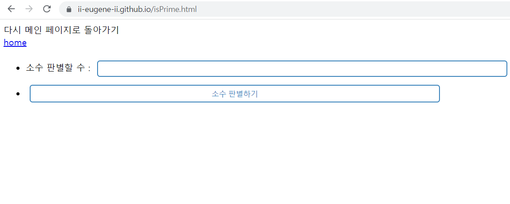
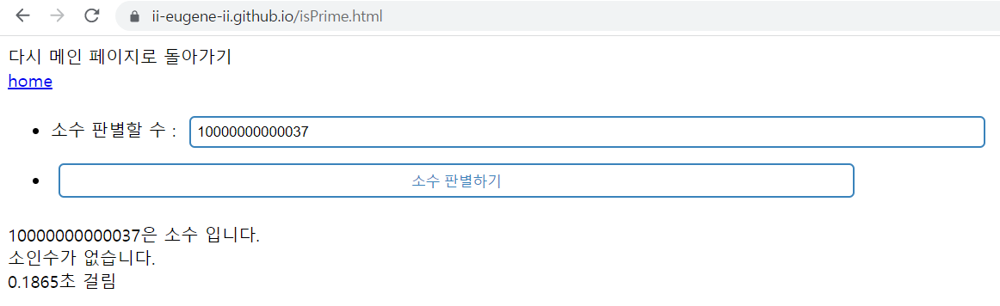
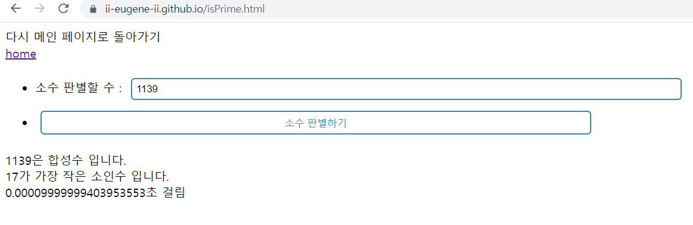

다시 메인 페이지로 돌아가기 home
기존에 홀로 있던 메인페이지에 개발 일지 페이지와 시험용 메모장 페이지 개설
소수 판별기 추가
소수 판별기 작동 전 모습입니다.
CSS로 조금 꾸며서 기본적인 딱딱한 버튼 대신 조금 부드러워 보이는 모습입니다. 그럼에도 home 버튼은 확실히 꾸며야겠다는 생각이 듭니다.
소수 판별기 작동 후 모습입니다.
어떤 수를 입력하면 소수 여부를 띄워주고, 계산 시간이 얼마나 걸렸는지 알려줍니다. (사용자 기기별로 상이함)
합성수를 입력했을 때 모습입니다.
가장 작은 소인수를 보여줍니다.